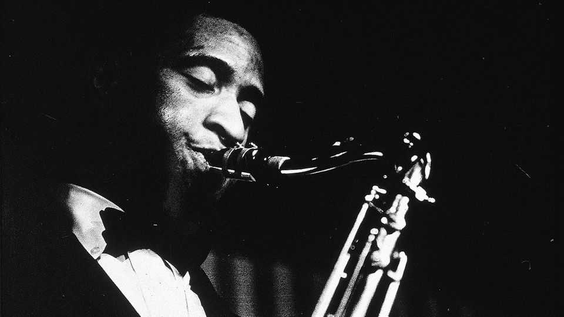

Sonny Rollins believed that jazz was all there was
The saxophone colossus died on May 25th, aged 95
June 4th 2026

Though he lived a mere two blocks away, Sonny Rollins hadn’t noticed those steps on Delancey Street before. One summer day in 1959, he climbed up. There, at the top, he found himself on the Williamsburg Bridge above New York’s East River. Subway cars and traffic were rattling over, hooting boats passing underneath. All around him were pillars and abutments in which he could hide. Close above him was the open sky. Corny or not, it gave him a spiritual feeling to be there.
This was the ideal place to practise his music, which was not just any music. His tenor saxophone, endlessly inventive, seamlessly melodic, percussive or romantic, was already famous. Since 1953 he had been cutting records as the leader of small bands, but in 1956 came “Saxophone Colossus”, which put him in the same league as his heroes Charlie “Bird” Parker and John Coltrane. He kept that status for the rest of his career, which contained more than 60 albums and two Grammys. But however much he was applauded, he was never satisfied with the way he played. Every so often the voice that kept talking inside him would tell him to improve himself. Hence, later, his time in an ashram in India, and hence his daily sojourns on the Williamsburg Bridge.
They went on for two years. Sometimes he would play for 15 hours or more, coming down only for bathroom breaks or a cognac at a bar he liked. In winter he played with gloves on. Some passers-by noticed his tall frame squeezed among the steelwork, and all heard his music, but few spoke to him. That was fine, because the only company he needed was his horn, which he was pushing further and further. Somewhere, at the bottom of the ocean, maybe, or beyond the stars—way beyond Sonny Rollins as yet—there was an ultimate sound. He had no ideas about what it might be, but he would know it when he heard it, and perhaps twice a year onstage he might get a snatch of it. Instantly it would fulfil him, and he would know that, at last, he was playing well. But not til then.
His head was already full to bursting with scraps of musical material he had laid down over the years. Etudes his brother played on the violin; Fats Waller on the family’s piano roll; juke-box tunes in bars; pop songs and ballads from cheap gramophones, and the jazz that sounded all over Harlem from clubs and open windows. The pianist Thelonious Monk mentored him, and the saxophonist Coleman Hawkins lived nearby. He revered both of them, and from eight years old, toting the alto sax his mother had given him, he knew a musical life was for him, too.
His improvisations drew on all this. He loved playing quotes and, after any number of rhythmic and harmonic variations, each one could be joined to another. An aria from here, a Broadway ballad from there, a cheeky half-heard riff. It was as if all music had a natural unity, and he believed it had. He would walk onto every stage with his mind a blank, waiting for a fresh thought or a fresh note to fall upon it. His horn technique he knew he could trust completely, subconsciously, however complex or fast. He had a thing with his horn, a communion. (When he and his wife Lucille had to flee from their flat on 9/11, his saxophone was all he took with him.) But the rest of any piece, the emotion and the spirit, he left entirely to the higher powers to provide.
Because he played with Bird, Coltrane, the trumpeter Miles Davis and drummer Max Roach, he was often called a bebop star. But he wouldn’t be pigeonholed that way. The freshness of bebop when it appeared in the 1940s, with its speed, intricacy and long solos, certainly suited him; its strictures didn’t, because he was naturally free. He often fused jazz with calypso in homage to his mother, who came from St Thomas in the Virgin Islands; “St Thomas” was one of the most celebrated tracks on “Saxophone Colossus”. Another, “Blue 7”, mixed jazz with blues. He married it to Latin dance rhythms, to funk and even to rock, in a brief collaboration with the Rolling Stones on “Tattoo You” in 1981. (He wasn’t too proud to play a backbeat.) For a time he got rid of pianists, who annoyed him because they limited his harmonic range. He liked trios: a drummer and a bassist, faithfully following along. And he could lead them anywhere for his jazz—especially, he felt, on the albums “Freedom Suite”, “A Night at ‘The Village Vanguard’” and “Way Out West”—which was big-picture stuff in which everything came together. It was the unification of music; it was all one. God, perhaps.
His serenity, onstage and off, disguised his rough road to fame. Because as a young man he saw Charlie Parker as his Messiah, and Bird was on drugs, he used heroin himself to see if he could end up playing like that. All it did was set him to stealing, for which he eventually served ten months at Rikers Island. In 1955, after some tough rehabilitation, he was clean again, and stayed that way. It was Bird himself who had told him to stop and consider what he had to give to music.
That set him thinking. He had always considered music as a gift to him, ever since he had blown his first notes as a child. He had been in seventh heaven then. And it continued with each performance, as (with few exceptions, but some down days) he revelled in the gift he had been given. But the question was, was he truly giving back to his audiences, or just playing for himself? To mangle his own Golden Rule a bit, was he doing unto others as had been done to him?
He never really found the answer to that question. But he was looking for that as much as for the ultimate sound. It seemed to be his karma, ever, to search for these things. Well, he’d got a lot of bad stuff he was paying for. But that was the purpose of being in this inconsequential world. To learn; to try to get wisdom; to come back and try again, if you didn’t. And to keep on pushing that music, as he had on the Williamsburg Bridge; which, for his multitudes of admirers, was gift and glory enough. ■